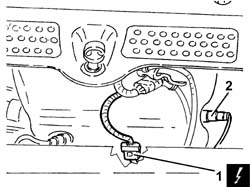
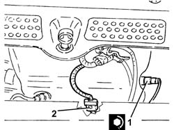
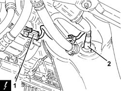
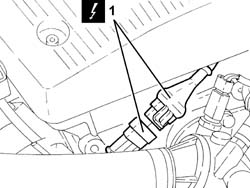
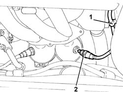

1080B92 LEFT UPPER LAMBDA SENSOR R R
- Path
- Procedures > 10 ENGINE UNIT > 1080 EXHAUST EMISSION CONTROL SYSTEM > 1080B EXHAUST EMISSION CONTROL SYSTEM > 1080B92 LEFT UPPER LAMBDA SENSOR R R
- Kind
- repair procedure (removal / refitting; the operation number is the code)
- Applies to
- engines: 1.8 T.SPARK, 2.0 JTS, 3.2 V6; all production periods
- Interactive page
- https://sloeber94.github.io/elrnDB-aGt/en/#/125001124
Applies to: engines: 2.0 JTS; all production periods
 Removing
Removing
 Refitting
RefittingEnsure that the ignition key is in the OFF position, then disconnect the negative battery terminal (-).
Name | Connector | |
|---|---|---|
- | Battery | See A1B BATTERY ( BATTERY NEGATIVE ) |
1. Disconnect the electrical connection for the left upper Lambda sensor and release it from its mounting bracket.
Name | Connector | |
|---|---|---|
1 | Lambda sensor on pre-catalyzer | See K15 LAMBDA SENSOR ON PRE-CATALYZER |
2. Undo and remove the left upper Lambda sensor.

Applies to: engines: 2.0 JTS; all production periods
Refitting
Removing1. Place the left upper Lambda sensor back in its housing and tighten it to the recommended torque.
 | Fastening | Component | Ø | Value (daNm) |
|---|---|---|---|---|
1 | - | RIGHT LAMBDA SENSOR | M18 | 4.0 ÷ 5.0 |
2. Connect the electrical connection for the left upper Lambda sensor and secure it to the mounting bracket.

Applies to: engines: 2.0 JTS; all production periods
Connect the negative (-) battery terminal
Applies to: engines: 3.2 V6; all production periods
Removing
RefittingPosition the vehicle on the ramp
Ensure that the ignition key is in OFF position, then disconnect the battery negative terminal (-).
Name | Connector | |
|---|---|---|
- | Battery | See A1B BATTERY ( BATTERY NEGATIVE ) |
Proceed with removal
Op. 7055B54 UNDER-ENGINE GUARD - R R
1. Disconnect the electrical connection for the upper left Lambda sensor.
2. Undo and remove the left upper Lambda sensor.
Name | Connector | |
|---|---|---|
1 | Lambda sensor on pre-catalyzer | See K15 LAMBDA SENSOR ON PRE-CATALYZER |

Applies to: engines: 3.2 V6; all production periods
Refitting
RemovingPlace the left upper Lambda sensor back in its housing and tighten it to the recommended torque.
| Fastening | Component | Ø | Value (daNm) |
|---|---|---|---|---|
- | - | LEFT LAMBDA SENSOR | M18 | (Left catalytic preconverter side) 4.1 ÷ 5.0 |
Connect the electrical connection for the left upper Lambda sensor.
Proceed with refitting
Op. 7055B54 UNDER-ENGINE GUARD - R R.
Connect the negative (-) battery terminal
Remove the car from the ramps.
Applies to: engines: 1.8 T.SPARK; all production periods
Removing
RefittingPosition the vehicle on the ramp.
Ensure that the ignition key is in the OFF postition, then disconnect the battery negative terminal.
Name | Connector | |
|---|---|---|
- | Battery | See A1B BATTERY ( CONNECTORS ) |
Proceed with the removal
Op. 1072C44 EXHAUST MANIFOLD HEAT SHIELD ON BULKHEAD - R+R.
1. Disconnect the electrical connection for the left Lambda sensor.
Name | Connector | |
|---|---|---|
1 | Lambda sensor on pre-catalyzer | See K15 LAMBDA SENSOR ON PRE-CATALYZER ( ENGINE ) |

Applies to: engines: 1.8 T.SPARK; all production periods
1. Release the electrical wiring for the left Lambda sensor from the fastening.
2. Undo and remove the left Lambda sensor.

Applies to: engines: 1.8 T.SPARK; all production periods
Refitting
RemovingPlace the left Lambda sensor back in its housing and tighten it to the recommended torque.
Fastening | Component | Ø | Value (daNm) | |
|---|---|---|---|---|
- | - | LEFT LAMBDA SENSOR | M18 | (Exhaust manifold side) 4.1 ÷ 5.0 |
Secure the electrical wiring for the left Lambda sensor to the fastening.
Connect the electrical connection for the left Lambda sensor.
Proceed with the refitting
Op. 1072C44 EXHAUST MANIFOLD HEAT SHIELD ON BULKHEAD - R+R.
Connect the battery terminal (-).
Remove the car from the ramp.
Topics linked from this page (2)
Topics that link to this page (7)
- W01 HIGH CO EMISSIONS
- W02 CO EMISSIONS LOW, NOX EMISSIONS HIGH
- 1016D20 LEFT CYLINDER HEAD – R.R. AND REPLACING GASKET
- 1076A70 HEAT SHIELD FOR LEFT CATALYTIC PRECONVERTER R R
- 1080B38 LEFT CATALYTIC PRECONVERTER R R OR REPLACE CYLINDER HEAD GASKET
- 1080B98 LAMBDA SENSORS (ALL) - R.R.
- 4130B20 POWER STEERING PUMP R R